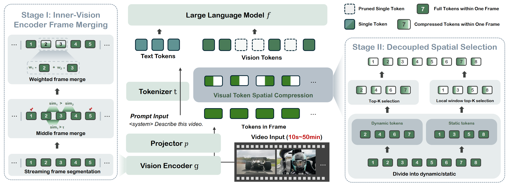

Abstract
Video large language models (Video-LLMs) have demonstrated strong capabilities in video understanding tasks. However, their practical deployment is still hindered by the inefficiency introduced by processing massive amounts of visual tokens. Although recent approaches achieve extremely low token retention ratios while maintaining accuracy comparable to full-token baselines, most of them perform compression only at the late stage of prefilling, leaving the efficiency of the vision encoder unoptimized. In this paper, we first show that vision encoding contributes a large portion to the time-to-first-token (TTFT). Therefore, instead of compressing visual tokens only after the vision encoder, performing compression inside the encoder still leaves substantial room for exploration. Based on this insight, we propose EarlyTom, a training-free token compression framework that performs early-stage visual token compression inside the vision encoder, enabling significantly better TTFT reduction and higher throughput. In addition, we introduce a decoupled spatial token selection strategy that improves the overall compression effectiveness. EarlyTom reduces TTFT by up to 2.65x and FLOPs by up to 61% on a single NVIDIA A100 GPU for the LLaVA-OneVision-7B model, while maintaining accuracy comparable to the full-token baseline. These improvements substantially enhance the practicality of deploying Video-LLMs in real-world production scenarios.
Method Overview

Overall pipeline of EarlyTom. Our method consists of two main stages for efficient video token compression. Stage I: Inner-vision encoder frame merging performs temporal compression inside the vision encoder. The video is adaptively segmented based on streaming frame similarity, redundant middle frames are merged using a local-optimal criterion, and merged representations are further refined with weighted fusion to reduce early-stage temporal redundancy. Stage II: Decoupling selection conducts spatial token reduction after vision encoding. Merged frame features are decomposed into dynamic and static token sets: dynamic frames undergo global Top-K selection, while static frames use local-window selection to preserve spatial distribution. The selected tokens from both paths are recombined and fed into the LLM for decoding. Together, these two stages enable early temporal compression and balanced spatial sampling, significantly accelerating Video LLM inference while maintaining semantic fidelity.
Step 1: Inner Vision Encoder Frame Compression
To enhance prefill efficiency, we implement an Inner Vision Encoder Frame Merge strategy. This approach reduces temporal redundancy directly within the encoder layers while maintaining high fidelity.
Streaming Frame Segmentation
Video frames are divided into segments based on token-wise cosine similarity. We apply an Exponential Moving Average (EMA) to smooth similarity scores and detect scene boundaries:
where $\alpha$ denotes the EMA smoothing factor, $s_t$ denotes the cosine similarity between frame $t$ and $t-1$, and $\hat{s}_t$ is the EMA-smoothed similarity. We split the two frames when the $\hat{s}_t$ was smaller than the threshold $\tau_{\mathrm{seg}}$.
Middle Frame Merge
Within a segment, frames are merged using a local optimal condition to preserve temporal consistency:
where $s_i$ is the similarity between $F_i$ and $F_{i+1}$, and $\tau_{\mathrm{merge}}$ is the merging threshold. This merging strategy ensures that only the most similar frames are merged, helping remove redundancy while keeping temporal consistency.
Weighted Representation
To further improve the quality of merged representations, we use a weighted merging scheme as illustrated in the equation below:
where $F_i$ and $F_{i+1}$ are the frame features and $s_i$, $s_{i+1}$ are their corresponding similarity scores. Each pair of frames is weighted by its similarity with the following frame. This weighting makes the merged frame representation more concentrated around semantically important content and reduces ambiguity caused by uneven temporal variation.
Step 2: Decoupled Spatial Token Selection
Standard Top-K sampling often suffers from distribution shifts due to "vision sink tokens", static tokens that dominate attention scores. To mitigate this, we propose a Decoupled Sampling Strategy that treats dynamic and static content independently.
Decoupling Frames into Dynamic and Static
Using the segmentation boundaries from the previous stage, we divide frames into:
- • Dynamic Part ($\hat{F}^d$): Head and tail frames of a segment (high motion/transition).
- • Static Part ($\hat{F}^s$): Intermediate frames (stable content).
Dynamic Frames: Global Top-K Selection
For motion-sensitive dynamic frames, we select tokens based on global importance using a re-scaled selection ratio $\hat{r}$ to preserve key temporal features:
where $A_i$ denotes the per-token attention scores of frame $F_i$, $I_i$ represents the indices of the selected tokens, and $\hat{r}$ is the re-scaled selection ratio used to achieve the predefined compression rate, incorporated with stage 1.
Static Frames: Local Window Top-K Selection
To avoid the bias of vision sinks and maintain the more raw feature distribution, we apply Local Window Selection. Frames are divided into $M$ windows, and only the most significant token within each local window is kept:
This ensures a spatially uniform compression that prevents "sink tokens" from drowning out subtle but necessary static information.
System Co-design: Heterogeneous Computation
To maximize execution efficiency and minimize latency, we implement a hardware-aware co-design that offloads computational tasks based on their complexity and resource requirements.
CPU–GPU Heterogeneous Pipeline
We leverage idle CPU capacity to handle less intensive tasks, allowing the GPU to focus on high-concurrency operations:
- GPU: Executes Dynamic Token Selection. Due to the larger candidate sets and motion sensitivity, these operations benefit from the GPU's massive parallel processing.
- CPU: Executes Segment-wise Static Token Selection. Since static tokens are processed within local windows, the CPU can efficiently manage these tasks in the background.
Results on Performance
We evaluate EarlyTom on four widely used video understanding benchmarks (MVBench, EgoSchema, LongVideoBench, and VideoMME) for several training-free state-of-the-art methods based on LLaVA-OneVision-0.5/7B, LLaVA-Video-7B and Qwen2.5-VL-7B. The results are shown in the following figure.
Results on Efficiency
We also evaluate the efficiency of EarlyTom on the video sink task. The results are shown in the following figure.
BibTeX
@inproceedings{wang2025earlytom,
title = {EarlyTom: Early Token Compression Completes Fast Video Understanding},
author = {Wang, Hesong and Jin, Xin and Lu, Lu and Chenhaowen Li, Jian Chen and Qiang Liu and Wang, Huan},
year = {2026},
booktitle={CVPR},
}